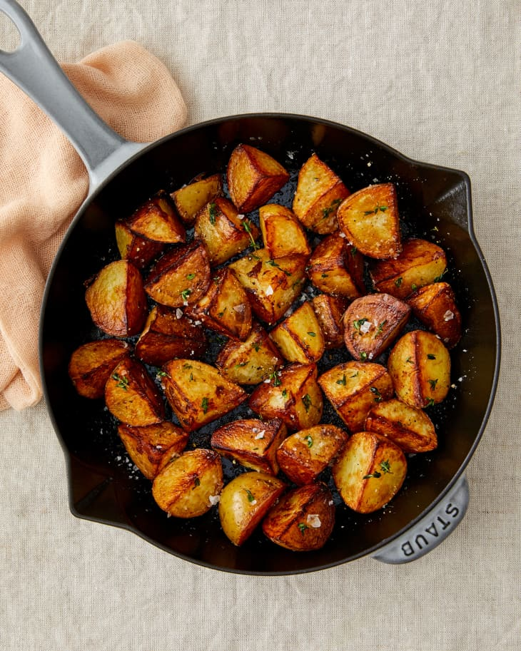

Fried Corn

Fried corn is a quick and easy snack that can be done in less than 6 minutes.
- Potatoes
- Vegetable Oil
- Salt
- First wash the potato.
- Second, heat up the pan and the oil.
- Once the oiul is hot, place the potato and let it fry for 5 minutes.
- Remove potato and salt to taste.
- Sprinkle cheese.